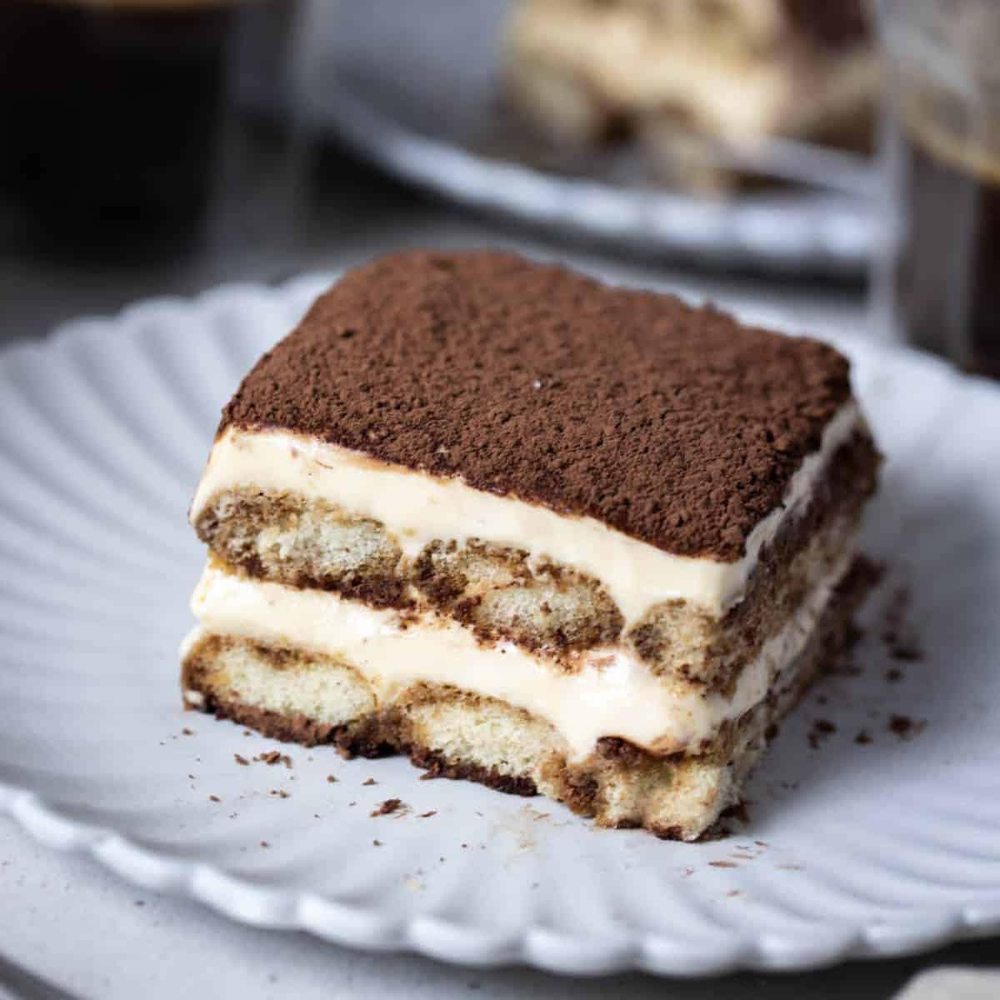

Tiramisu
Homepage

This tiramisu recipe is a no-bake dessert that's sure to impress even the pickiest of eaters!
Ingredients
- Egg Yolks (6)
- White Sugar (3/4 cup)
- Milk (2/3 cup)
- Heavy Cream (1 1/4 cups)
- Vanilla Extract (1/2 teaspoon)
- Mascarpone Cheese (1 pound)
- Strong Brewed Coffee (1/4 cup)
- Rum (2 tablespoons)
- Ladyfinger Cookies (2 packages)
- Unsweetened Cocoa Powder (1 tablespoon)
Steps
- Whisk egg yolks and sugar together in a medium saucepan until well blended.
- Whisk in milk and cook over medium heat, stirring constantly, until mixture comes to a boil.
- Boil gently for 1 minute, then remove from the heat and allow to cool slightly.
- Cover tightly and chill in the refrigerator for 1 hour.
- Beat cream and vanilla in a medium bowl with an electric mixer until stiff peaks form.
- Remove egg yolk mixture from the refrigerator; add mascarpone cheese and whisk until smooth.
- Combine coffee and rum in a small bowl. Split ladyfingers in half lengthwise and drizzle with the coffee mixture. Arrange 1/2 of the soaked ladyfingers in the bottom of a 7x11-inch dish.
- Spread 1/2 of the mascarpone mixture over the ladyfingers, then spread 1/2 of the whipped cream over top. Repeat layers once more.
- Sprinkle cocoa powder over top.
- Cover and refrigerate until set, 4 to 6 hours.
Original AllRecipes Recipe